Contents
Inicializar
clear variables close all clc
P1
P1.1
Graficar PGA promedio esperado para un terremoto tipo interplaca vs la distancia r, con las condiciones H = 37 km; r = 10:1:500; Mw = [7.0;8.0;8.8] Comparar resultados
C1_rock = 0.00; C2_rock = 0.00; C3_rock = -2.552; C4_rock = 1.45; % * Standard deviation for magnitud greater than 8 is equal to the value for magnitud equal to 8 C5_rock = -0.1; % * % Para suelo (soil) C1_soil = 0.00; C2_soil = 0.00; C3_soil = -2.329; C4_soil = 1.45; C5_soil = -0.1; Zt_var = 0; H_var = 37; Mw_vector = [7.0; 8.0; 8.8]; r = (10:1:500).'; for Mw = 1:3 Mw_var = Mw_vector(Mw,1); for r_var = 1:length(r) puntos_rock(r_var,Mw) = exp(0.2418 + 1.414*Mw_var + C1_rock + C2_rock*(10-Mw_var)^3 + C3_rock*log(r(r_var,1) + 1.7818*exp(0.544*Mw_var)) + 0.00607*H_var + 0.3846*Zt_var); puntos_soil(r_var,Mw) = exp(-0.6687 + 1.438*Mw_var + C1_soil + C2_soil*(10-Mw_var)^3 + C3_soil*log(r(r_var,1) + 1.097*exp(0.617*Mw_var)) + 0.00648*H_var + 0.3643*Zt_var); end % fprintf('Mw %f Roca \n',Mw_var) figure loglog(r,puntos_rock(:,Mw)) hold on loglog(r,puntos_soil(:,Mw)) xlabel('r [km]') ylabel('PGA [unidad]') title('PGA, sismo magnitud', Mw_var) legend('Roca','Suelo') hold off % fprintf('Mw %f Suelo \n',Mw_var) % figure % loglog(r,puntos_soil(:,Mw)) % xlabel('r [km]') % ylabel('PGA suelo[unidad]') % title('PGA para suelo, sismo magnitud', Mw_var) end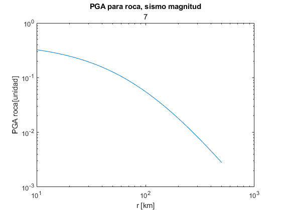 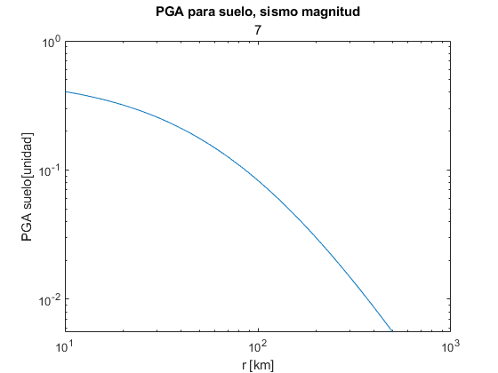 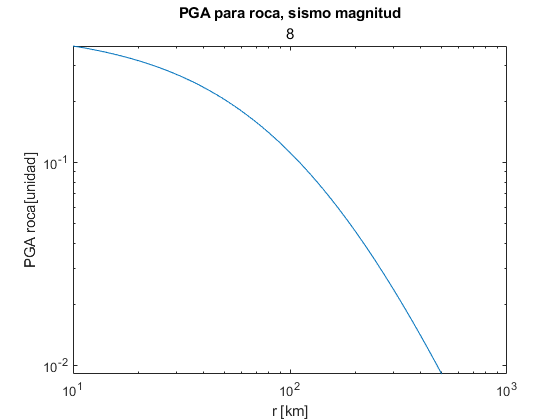
P1.2
Para un periodo de 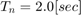 y un amortiguamiento de 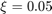
% Para roca C1_rock = -3.328; C2_rock = -0.0080; C3_rock = -2.1070; C4_rock = 1.55; C5_rock = -0.1; % Para suelo C1_soil = -6.433; C2_soil = -0.0164; C3_soil = -1.290; C4_soil = 1.55; C5_soil = -0.1; for Mw = 1:3 Mw_var = Mw_vector(Mw,1); for r_var = 1:length(r) puntos_rock(r_var,Mw) = exp(0.2418 + 1.414*Mw_var + C1_rock + C2_rock*(10-Mw_var)^3 + C3_rock*log(r(r_var,1) + 1.7818*exp(0.544*Mw_var)) + 0.00607*H_var + 0.3846*Zt_var); puntos_soil(r_var,Mw) = exp(-0.6687 + 1.438*Mw_var + C1_soil + C2_soil*(10-Mw_var)^3 + C3_soil*log(r(r_var,1) + 1.097*exp(0.617*Mw_var)) + 0.00648*H_var + 0.3643*Zt_var); end % fprintf('Mw %f Roca \n',Mw_var) figure loglog(r,puntos_rock(:,Mw)) hold on loglog(r,puntos_soil(:,Mw)) xlabel('r [km]') ylabel('PGA [g]') title('PGA con T_n = 2, sismo magnitud', Mw_var) legend('Roca','Suelo') hold off % fprintf('Mw %f Suelo \n',Mw_var) % figure % loglog(r,puntos_soil(:,Mw)) % xlabel('r [km]') % ylabel('PGA suelo[unidad]') % title('PGA para suelo, sismo magnitud', Mw_var) end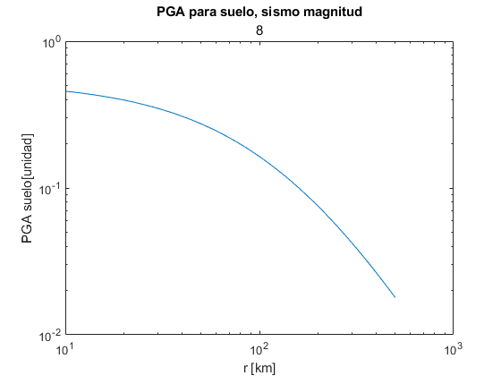 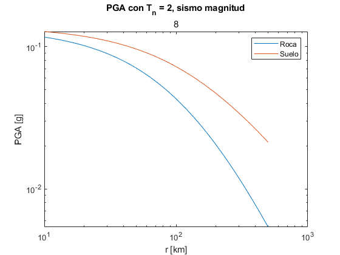 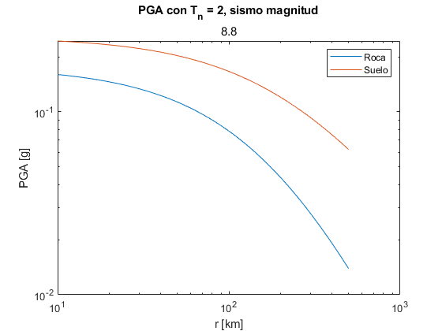
P1.3
disp('P1.3') Mw_var = 8.8; r_var = 20; %km % Para roca (rock) C1_rock = 0.00; C2_rock = 0.00; C3_rock = -2.552; C4_rock = 1.45; % * Standard deviation for magnitud greater than 8 is equal to the value for magnitud equal to 8 C5_rock = -0.1; % * % Para suelo (soil) C1_soil = 0.00; C2_soil = 0.00; C3_soil = -2.329; C4_soil = 1.45; C5_soil = -0.1; Zt_var = 0; lny_rock = (0.2418 + 1.414*Mw_var + C1_rock + C2_rock*(10-Mw_var)^3 + C3_rock*log(r_var + 1.7818*exp(0.544*Mw_var)) + 0.00607*H_var + 0.3846*Zt_var); lny_soil = (-0.6687+1.438*Mw_var + C1_soil + C2_soil*(10-Mw_var)^3 + C3_soil*log(r_var + 1.097*exp(0.617*Mw_var))+0.000648*H_var + 0.3643*Zt_var); disp('Para sitios en roca') fprintf('ln(y)= %f \n', lny_rock) disp('Para sitios en suelo') fprintf('ln(y)= %f \n', lny_soil) sigma_rock = C4_rock + C5_rock*8.0; %desv. estandar para mag. mayores a 8, es equiv. a de la mag. 8. sigma_soil = C4_soil + C5_soil*8.0; fprintf('sigma_rock = %f \n', sigma_rock) fprintf('sigma_soil = %f \n', sigma_soil) PGA_rock = logninv(0.95,lny_rock,sigma_rock); PGA_soil = logninv(0.95,lny_soil,sigma_soil); fprintf('PGA_rock = %f \n',PGA_rock) fprintf('PGA_soil = %f \n',PGA_soil)
P1.3 Para sitios en roca ln(y)= -1.009701 Para sitios en suelo ln(y)= -1.030598 sigma_rock = 0.650000 sigma_soil = 0.650000 PGA_rock = 1.061257 PGA_soil = 1.039310
P2
Está en Excel completa
P3
P3.a
Definir fRM(r)
r_min = 7.2; % km L1 = 34.4; % km L2 = 62.3; % km L = 96.7; % km % Definr fRM(r) % La vamos a definir en función de 'l' para que quede con los subcasos syms r l % fRM(r,l) = piecewise( ... % and(l<L1,L1<L2),piecewise(r == r_min,l/(L-l),and(r<r1,r>r_min),2*(L1-l)/(L-l),and(r<r2,r>r1),(L-2*L1)/(L-l)), ... % and(L1<l,l<L2),piecewise(r==r_min,L1/(L-l),and(r2>r,r>r_min),(L2-l)/(L-l)), ... % and(l>L2,L2>L1),1); % % l<L1,L1<L2 % r11 = (r_min^2+(L1-l)^2)^0.5; % r12 = (r_min^2+(L2-l)^2)^0.5; % fRM1 = piecewise(r == r_min,l/(L-l),and(r<=r11,r>r_min),r/((L-l)*sqrt(r^2-r_min^2)),and(r<=r12,r>r11),r/((L-l)*sqrt(r^2-r_min^2))); % % L1<l<L2 % r22 = (r_min^2+(L2-l)^2)^0.5; % fRM2= piecewise(r==r_min,L1/(L-l),and(r22>=r,r>=r_min),r/((L-l)*sqrt(r^2-r_min^2))); % % L1<L2<l % fRM3 = piecewise(r==r_min,1,~(r==r_min),0);
P3.b
En Excel
Mmax = 7.38; % Magnitud de momento máxima (con L = 96.7) que la falla es capaz de producir
P3.c
En Excel
l_vals = [43.72; 12.43; 6.62; 1.882]; %km % magn = [0.95*Mmax; 0.85*Mmax; 0.8*Mmax;0.7*Mmax];
P3.d
for i = 1:length(l_vals) l = l_vals(i,1); l_val = l; if and(l_val<=L1,l_val<=L2) r1(i,1) = (r_min^2+(L1-l)^2)^0.5; r11 = r1(i,1); r2(i,1) = (r_min^2+(L2-l)^2)^0.5; r12 = r2(i,1); fRr(i,1) = piecewise(r == r_min,l/(L-l),and(r<=r11,r>r_min),r/((L-l)*sqrt(r^2-r_min^2)),and(r<=r12,r>r11),r/((L-l)*sqrt(r^2-r_min^2))); elseif and(l_val>L1, l_val<L2) r2(i,1) = (r_min^2+(L2-l)^2)^0.5; r22 = r2(i,1); fRr(i,1)= piecewise(r==r_min,L1/(L-l),and(r22>=r,r>=r_min),r/((L-l)*sqrt(r^2-r_min^2))); elseif l_val>=L2 fRr(i,1) = piecewise(r==r_min,1,~(r==r_min),0); % Coordenada 1 es fR(r), no tiene ni r1 ni r2 end end clear l_val r11 r12 r22 figure hold on grid on for i = 1:length(l_vals) fplot(fRr(i,1),[r_min r2(i,1)]) end xlabel('r [km]') ylabel('f_{R}(r)') title('Funciones de densidad de probabilidad para las cuatro longitudes de ruptura') legend('l = 43.72km; Magn = 7.01','l = 12.42km; Magn = 6.27','l = 6.62km; Magn = 5.90','l = 1.88km; Magn = 5.16')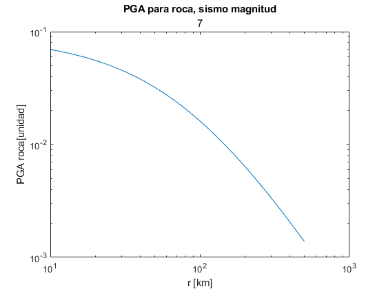
P3.e
% Para el caso de ruptura asociado a 0.7Mmax => l = 1.882km % Aproximar fR(r) numéricamente utilizando histogramas % 1. Dividir la falla en segmentos de longitud dx Dx = [0.1; 1; 2]; %km % Para cada división, calcular la distancia ri asociada % pos_x = zeros(L/min(Dx),L/min(Dx)); x_0 = 0; for i = 1:length(Dx) for j = 1:L/Dx(i,1) pos_x(j,i) = x_0 + Dx(i,1)*j; end% Columna 1 contiene posición x cada 0.1, columna 2 cada 1km, columna 3 cada 2km end % Determinamos ri para cada segmento for i = 1:length(Dx) for j = 1:length(pos_x(:,i)) if pos_x(j,i) < L1 ri(j,i) = sqrt((L1 - pos_x(j,i))^2 + r_min^2); end if pos_x(j,i) > L1 ri(j,i) = sqrt((pos_x(j,i) - L1)^2 + r_min^2); end end end % Determinamos cantidad de veces que se repite un ri dentro del rango R DR = [1;2.5;5]; % km r2max = (r_min^2 + L2^2)^0.5; R_0 = r_min; for i = 1:length(DR) for j = 1:round(r2max/DR(i,1)) R_range(j,i) = R_0 + DR(i,1)*(j-1); %Creo un rango de R+DR.... R+DR... if i == 1 R_range1(j,1) = R_0 + DR(i,1)*(j-1); elseif i == 2 R_range2(j,1) = R_0 + DR(i,1)*(j-1); elseif i == 3 R_range3(j,1) = R_0 + DR(i,1)*(j-1); end end end % disp('Se muestra R_range') % disp(R_range) R_frec = zeros(length(R_range),length(Dx)); % Inicializo matriz de zeros(Rango_R1,Rango_R2,Rango_R3), pero nos quedamos con el mayor frecs1 = zeros(length(R_range1),length(Dx)); frecs2 = zeros(length(R_range2),length(Dx)); frecs3 = zeros(length(R_range3),length(Dx)); for i = 1:length(DR) % Para cada Dx, justo calza también con para cada DR for j = 1:length(Dx) % Para cada Rango_R, no pasa nada si partimos de for k = 1:length(R_range(:,i))-1 % Para cada largo del Dx asociaso for t = 1:length(ri(:,j)) if i == 1 if and(ri(t,j) > R_range(k,i), ri(t,j) < R_range(k+1,i)) frecs1(k,j) = frecs1(k,j) + 1; end elseif i == 2 if and(ri(t,j) > R_range(k,i), ri(t,j) < R_range(k+1,i)) frecs2(k,j) = frecs2(k,j) + 1; end elseif i== 3 if and(ri(t,j) > R_range(k,i), ri(t,j) < R_range(k+1,i)) frecs3(k,j) = frecs3(k,j) + 1; end end end end end end % Graficamos for i = 1:length(DR) for j = 1:length(Dx) if i == 1 for k = 1:length(frecs1(:,j)) if ~(frecs1(k,j) == 0) if j ==1 frecs11_new(k,1) = frecs1(k,j); elseif j == 2 frecs12_new(k,1) = frecs1(k,j); elseif j == 3 frecs13_new(k,1) = frecs1(k,j); end end end elseif i == 2 for k = 1:length(frecs2(:,j)) if ~(frecs2(k,j) == 0) if j ==1 frecs21_new(k,1) = frecs2(k,j); elseif j == 2 frecs22_new(k,1) = frecs2(k,j); elseif j == 3 frecs23_new(k,1) = frecs2(k,j); end end end elseif i == 3 for k = 1:length(frecs3(:,j)) if ~(frecs3(k,j) == 0) if j ==1 frecs31_new(k,1) = frecs3(k,j); elseif j == 2 frecs32_new(k,1) = frecs3(k,j); elseif j == 3 frecs33_new(k,1) = frecs3(k,j); end end end end end end figure myhist11 = histogram(frecs11_new.',R_range1); hold on myhist12 = histogram(frecs12_new.',R_range2); myhist13 = histogram(frecs13_new.',R_range3); myhist11.Normalization = 'pdf'; myhist12.Normalization = 'pdf'; myhist13.Normalization = 'pdf'; xlabel('r') ylabel('f_R(r)') legend('Dx = 0.1', 'Dx = 1', 'Dx = 2') hold off figure myhist21 = histogram(frecs21_new.',R_range1); hold on myhist22 = histogram(frecs22_new.',R_range2); myhist23 = histogram(frecs23_new.',R_range3); myhist21.Normalization = 'pdf'; myhist22.Normalization = 'pdf'; myhist23.Normalization = 'pdf'; xlabel('r') ylabel('f_R(r)') legend('Dx = 0.1', 'Dx = 1', 'Dx = 2') hold off figure myhist31 = histogram(frecs21_new.',R_range1); hold on myhist32 = histogram(frecs22_new.',R_range2); myhist33 = histogram(frecs23_new.',R_range3); myhist31.Normalization = 'pdf'; myhist32.Normalization = 'pdf'; myhist33.Normalization = 'pdf'; xlabel('r') ylabel('f_R(r)') legend('Dx = 0.1', 'Dx = 1', 'Dx = 2') hold off % for i = 1:length(Dx) % for j = 1:length(R_range(:,i)) % if ~(R_range(j,i) == 0) % if i == 1 % R_range_new1(j,1) = R_range(j,i); % elseif i == 2 % R_range_new2(j,1) = R_range(j,i); % elseif i == 3 % R_range_new3(j,1) = R_range(j,i); % end % end % if ~(R_frec(j,i) == 0) % if i == 1 % R_frec_new1(j,1) = R_frec(j,i); % elseif i == 2 % R_frec_new2(j,1) = R_frec(j,i); % elseif i == 3 % R_frec_new3(j,1) = R_frec(j,i); % end % end % end % figure % hold on % grid on % hist1 = histogram(R_frec_new1.',R_range_new1) % hist2 = histogram(R_frec_new2.',R_range_new2) % hist3 = histogram(R_frec_new3.',R_range_new3) % hist1.Normalization = 'pdf'; % hist2.Normalization = 'pdf'; % hist3.Normalization = 'pdf'; % xlabel('r [km]') % ylabel('f_{R}(r)') % hold off % end % % %table(R_range,R_frec)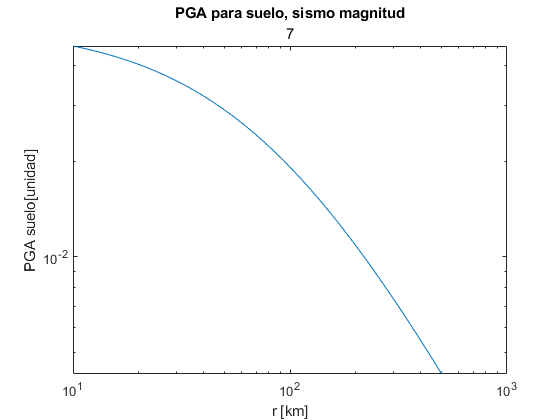 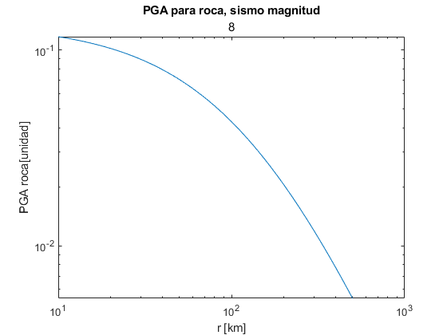